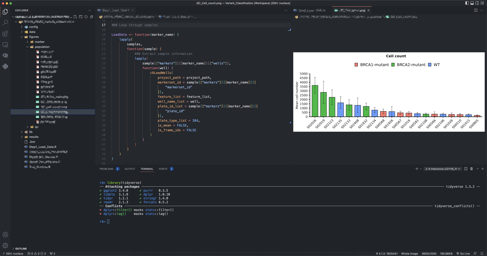

![]()
The details refer to: https://github.com/REditorSupport/vscode-R

Install r packages
pacman::p_load(
jsonlite,
rlang,
languageserver,
httpgd,
IRkernel,
rmarkdown
)### A modern R console from python
pip install -U radianIntall VSCode extensions
- vscode-R
- R Debugger
- Error lens
- Live Preview
- vscode-pdf
- vscode-icons
- Remote Development
- LiveShare
- Excel Viewer
- Project Manager
- Quarto
- Path Intellisense
- Codesnap
- Git Graph
SSH using Keys
open Users/zhonggr/.ssh/config, add the following
Host nucleus
HostName 172.20.***.** ## host ip address
User zhonggrUser Settings
- User
settings.json:
{ "files.associations": {
"*.Rmd": "rmd",
"*.R": "r"
},
"security.workspace.trust.untrustedFiles": "open",
"editor.fontSize": 14,
"editor.rulers": [80],
"explorer.confirmDelete": false,
"r.rterm.mac": "/opt/homebrew/bin/radian",
// "r.rterm.mac": "/opt/homebrew/Caskroom/miniforge/base/bin/radian",
"r.rpath.mac": "/usr/local/bin/R",
// "r.rpath.mac": "/opt/homebrew/Caskroom/miniforge/base/bin/R",
// "r.rterm.windows": "C:\\Program Files\\R\\R-4.2.1\\bin\\R.exe",
"r.rterm.windows": "C:\\Users\\zhonggr\\AppData\\Local\\Programs\\Python\\Python310\\Scripts\\radian.exe",
"r.rpath.windows": "C:\\Program Files\\R\\R-4.2.1\\bin\\R.exe",
"r.plot.useHttpgd": true,
"r.rterm.option": [],
"r.bracketedPaste": true,
"r.sessionWatcher": true,
"r.alwaysUseActiveTerminal": true,
"quarto.render.previewType": "external",
// "terminal.integrated.fontSize": 15,
// "terminal.integrated.defaultProfile.windows": "Git Bash",
"terminal.integrated.defaultProfile.windows": "R Terminal",
// "terminal.integrated.defaultProfile.osx": "R Terminal",
"terminal.integrated.defaultProfile.osx": "zsh",
"workbench.iconTheme": "vscode-icons",
"r.helpPanel.cacheIndexFiles": "Global",
"workbench.preferredDarkColorTheme": "Monokai",
"workbench.preferredHighContrastColorTheme": "GitHub Dark Default",
"r.rmarkdown.chunkBackgroundColor": "",
"workbench.colorTheme": "GitHub Dark",
"liveServer.settings.donotShowInfoMsg": true,
"workbench.tree.indent": 25,
"python.analysis.completeFunctionParens": true,
"editor.minimap.enabled": false,
"explorer.confirmDragAndDrop": false,
"window.restoreWindows": "none",
"remote.SSH.remotePlatform": {
"nucleus": "linux"
},
"editor.guides.bracketPairs": true,
"workbench.colorCustomizations": {
"editorBracketHighlight.foreground1": "#5bb3b3",
"editorBracketHighlight.foreground2": "#fac863",
"editorBracketHighlight.foreground3": "#f99157",
"editorBracketHighlight.foreground4": "#ec5f67",
"editorBracketHighlight.foreground5": "#bb80b3",
"editorBracketHighlight.foreground6": "#98C379",
},
"editor.parameterHints.enabled": false,
"task.quickOpen.history": 3,
"terminal.integrated.tabs.enableAnimation": false,
"terminal.integrated.tabs.enabled": false,
"terminal.integrated.fontSize": 13,
"editor.acceptSuggestionOnEnter": "off",
"editor.tabCompletion": "on",
"editor.guides.indentation": false,
"vsicons.dontShowNewVersionMessage": true,
"files.exclude": {
"**/.git": true,
"**/.svn": true,
"**/.hg": true,
"**/CVS": true,
"**/.DS_Store": true,
"**/Thumbs.db": true
}
}Remote Server Settings
[SSH:nucleus] settings.json
{
"r.rterm.linux": "/home/zhonggr/.local/bin/radian",
// "r.rterm.linux": "/bin/R",
"r.rpath.linux": "/bin/R",
"r.alwaysUseActiveTerminal": true,
"r.bracketedPaste": true,
"r.sessionWatcher": true,
// "terminal.integrated.defaultProfile.linux": "R Terminal",
// "terminal.integrated.defaultProfile.linux": "tmux",
"terminal.integrated.defaultProfile.linux": "bash",
"r.plot.useHttpgd": true
}Keyboard Shortcuts
// April 09, 2023 updated
[
{
"key": "alt+-",
"command": "type",
// "when": "editorLangId == r && editorTextFocus || editorLangId == rmd && editorTextFocus",
// if you want using quarto, try this
"when": "editorLangId =~ /r|rmd|qmd/ && editorTextFocus",
"args": {
"text": " <- "
}
},
{
"key": "ctrl+shift+m",
"command": "type",
// "when": "editorLangId == r && editorTextFocus || editorLangId == rmd && editorTextFocus",
"when": "editorLangId =~ /r|rmd|qmd/ && editorTextFocus",
"args": {
"text": " |> "
}
},
{
"key": "ctrl+shift+m",
"command": "-workbench.actions.view.problems"
},
// input indicative of r markdown code chunk
{
"key": "ctrl+shift+i",
"command": "editor.action.insertSnippet",
"when": "editorTextFocus && editorLangId == 'rmd'",
"args": {
"snippet": "```{r}\n${TM_SELECTED_TEXT}$0\n```"
},
"label": "input indicative of r markdown code chunk"
},
// you can also input indicative of code chunk in `r` file by inserting "# %% ":
// specifics in `https://github.com/REditorSupport/vscode-R/pull/662`
{
"key": "ctrl+shift+i",
"command": "editor.action.insertSnippet",
"when": "editorTextFocus && editorLangId == 'r'",
"args": {
"snippet": "$LINE_COMMENT %% "
},
"label": "input indicative of code chunk"
},
// open help panel for selection
{
"key": "f1",
"command": "r.helpPanel.openForSelection",
"when": "editorTextFocus && editorLangId == 'r' || editorTextFocus && editorLangId == 'rmd'"
},
// RStudio keybinding for R Package development
// {
// "key": "ctrl+shift+b",
// "command": "r.install",
// "when": "resourceLangId == 'r'"
// },
// {
// "key": "ctrl+shift+e",
// "command": "r.check",
// "when": "resourceLangId == 'r'"
// },
// {
// "key": "ctrl+shift+t",
// "command": "r.test",
// "when": "resourceLangId == 'r'"
// },
// {
// "key": "ctrl+shift+d",
// "command": "r.document",
// "when": "resourceLangId == 'r'"
// },
// {
// "key": "ctrl+shift+l",
// "command": "r.loadAll",
// "when": "resourceLangId == 'r'"
// },
{
"key": "ctrl+alt+p",
"command": "r.runCommand",
"when": "editorTextFocus && editorLangId == 'r'",
"args": ".vsc.browser(httpgd::hgd_url(), viewer = \"Beside\")"
},
// terminal settings
{
"key": "alt+-", // or whatever keybinding you want
"command": "workbench.action.terminal.sendSequence",
"args": {
"text": " <- "
},
"when": "terminalFocus && !terminalTextSelected"
},
{
"key": "ctrl+shift+m",
"command": "workbench.action.terminal.sendSequence",
"when": "terminalFocus && !terminalTextSelected",
"args": {
"text": " |> "
}
}
]Toning down code linting
creating a ~/.lintr file in the project folder
linters: with_defaults(
line_length_linter = NULL,
open_curly_linter = NULL,
object_usage_linter = NULL,
commented_code_linter = NULL,
object_name_linter = NULL,
object_length_lnter = NULL,
infix_spaces_linter = NULL,
commas_linter = NULL,
function_left_parentheses_linter = NULL,
trailing_whitespace_linter = NULL)